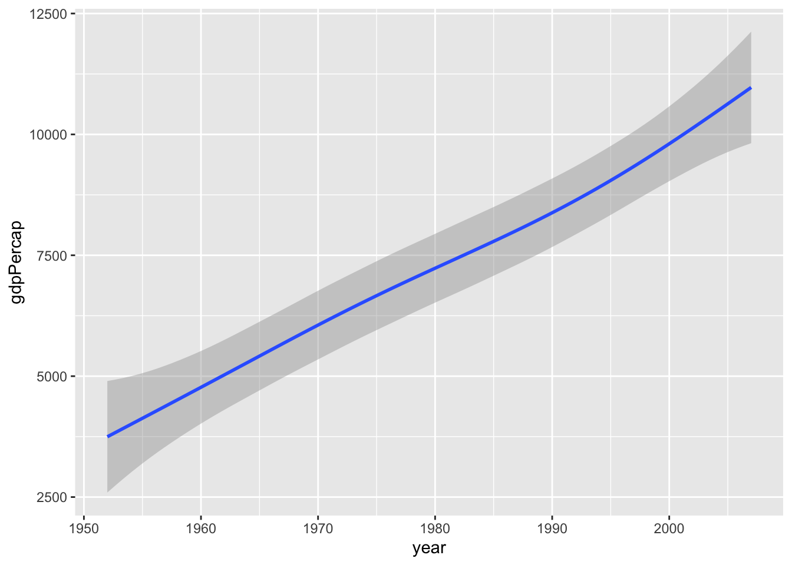
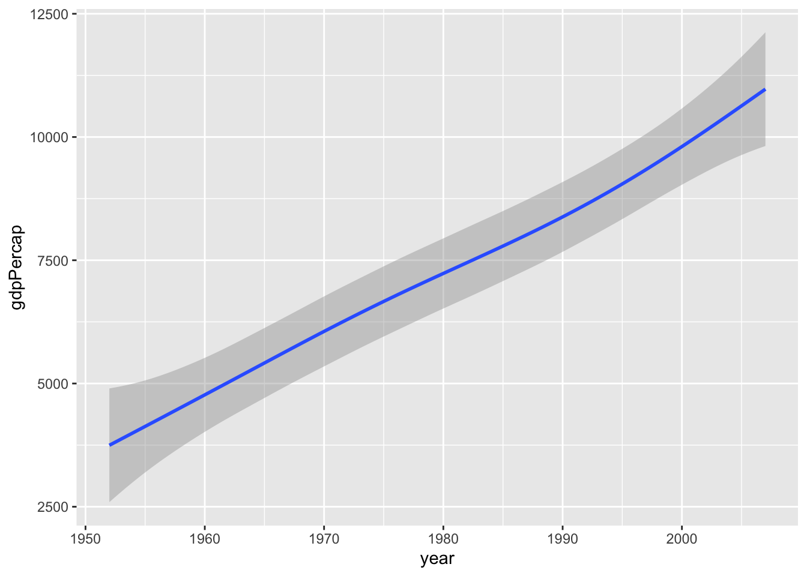
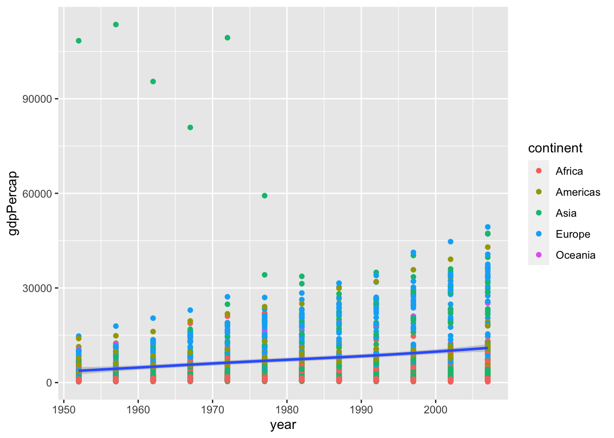

Kapitel 11 Geoms
Mit den geom_xx() Funktionen stellen wir die Daten als geometrische Formen in einer Grafik dar. Jede ggplot2 Grafik benötigt daher mindestens ein geom. Beispiele sind
geom_point()geom_line()geom_histogramm()
Da wir nicht alle verfügbaren geoms auflisten können, sei an dieser Stelle auf die ggplot2 Seite verwiesen.
gapminder %>%
ggplot(aes(x = year, y = gdpPercap)) +
geom_point()
gapminder %>%
ggplot(aes(x = year, y = gdpPercap)) +
geom_smooth()
#> `geom_smooth()` using method = 'gam' and formula 'y ~ s(x, bs = "cs")' 

Wir haben hier die gleichen Daten visualisiert. Allerdings ist das Ergebnis doch recht unterschiedlich. Der Scatterplot zeigt alle (abgesehen von überzeichnen) Daten, wohingegen mit geom_smooth() eine geglätteter Zusammenhang dargestellt wird.
Interessant sind hier natürlich die wenigen großen gdpPercap Werte
gapminder %>%
filter(gdpPercap > 50000)
#> # A tibble: 6 x 6
#> country continent year lifeExp pop gdpPercap
#> <fct> <fct> <int> <dbl> <int> <dbl>
#> 1 Kuwait Asia 1952 55.6 160000 108382.
#> 2 Kuwait Asia 1957 58.0 212846 113523.
#> 3 Kuwait Asia 1962 60.5 358266 95458.
#> 4 Kuwait Asia 1967 64.6 575003 80895.
#> 5 Kuwait Asia 1972 67.7 841934 109348.
#> 6 Kuwait Asia 1977 69.3 1140357 59265.Kuwait hat über den gesamten Zeitraum hohe GDP Werte. Aber zu Beginn der Aufzeichnungen waren die Werte in Bezug auf die damals noch recht kleine Populationsgröße außergewöhnlich hoch.
Einem ggplot Objekt können wir nicht nur ein geom zuordnen. Prinzipiell können wir beliebig viele weitere geoms hinzufügen. Wir können also die gerade durchgeführte Glättung der Daten auch
direkt zum Scatterplot hinzufügen
gapminder %>%
ggplot(aes(x = year, y = gdpPercap)) +
geom_point() +
geom_smooth()
#> `geom_smooth()` using method = 'gam' and formula 'y ~ s(x, bs = "cs")'Wählen wir die Farbe der geometrischen Objekte anhand einer Faktorvariable, so erhalten wir automatisch eine entsprechende Legende
gapminder %>%
ggplot(aes(x = year, y = gdpPercap)) +
geom_point(aes(colour = continent)) +
geom_smooth()
#> `geom_smooth()` using method = 'gam' and formula 'y ~ s(x, bs = "cs")'
Beachte auch, dass wir colour nur für geom_point() gewählt haben. Die Glättung erfolgt weiterhin über alle Daten und nicht separat für jeden Kontinent. Aber das wäre natürlich auch möglich. Dazu können wir colour wieder global in ggplot() definieren.
gapminder %>%
ggplot(aes(x = year, y = gdpPercap, colour = continent)) +
geom_point() +
geom_smooth()
#> `geom_smooth()` using method = 'loess' and formula 'y ~ x'Die Punkte sind mir etwas zu groß und der Linientyp gefällt mir auch nicht in diesem Plot. Aber das lässt sich schnell ändern.
gapminder %>%
ggplot(aes(x = year, y = gdpPercap, colour = continent)) +
geom_point(size = 0.9) +
geom_smooth(linetype = 2)
#> `geom_smooth()` using method = 'loess' and formula 'y ~ x'